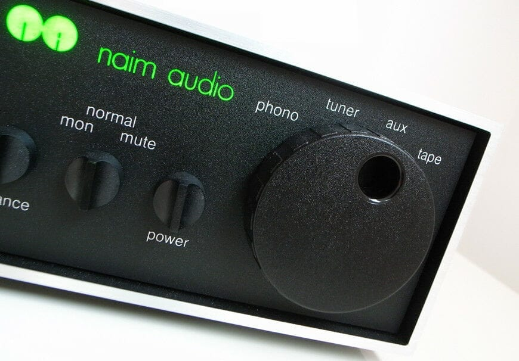

The Naim NAIT 2: its figures, its sound, and the NAITs that followed
The NAIT 2 is the small integrated amplifier Naim Audio made from 1988 to 1993. Most units have four inputs: a moving-magnet phono stage and three line inputs on 5-pin DIN sockets. Its power is modest: Naim gives 13 W per channel into 8 ohms. Reviewers praised its sound, and advised small, easy-to-drive speakers in a small room.
Checked on 2026-10-31 against Naim's owner's manual for the NAIT 2, Stereophile's 1989 review and bench measurements, and Hi-Fi World's 2007 comparison of four NAITs.

What it is
NAIT stands for Naim Audio InTegrated amplifier, as Naim's own glossary spells it. The first NAIT came out in 1983. Naim was then known for its separate pre-amplifiers and power amplifiers, and the NAIT put that sound in one small, low-powered box.
The NAIT 2 replaced it in 1988, voiced by Naim's technical director Roy George. It kept the same small "half-size" case: 205 mm wide, 76 mm high and 276 mm deep. There are two looks:
- Chrome bumper, 1988 to 1989: a black aluminium case with shiny edges, as in the photo above.
- Olive, from 1989: a black case with a green front panel. Naim told Hi-Fi World that the new case changed nothing in how it performs.
Compared with the first NAIT, it added a rotary input selector, a mute and tape-monitor switch, an Aux input and a normal balance control. The first NAIT's balance control could only lower the left channel.
Stereophile looked inside in 1989: discrete transistors only, with no op-amps, on a densely packed double-sided board, and a heatsink bolted to the aluminium case.
Inputs, outputs and figures
From Naim's manual, unless another source is named:
| NAIT 2 | |
|---|---|
| Phono | Moving magnet, RCA sockets: 2.5 mV, 47 kΩ |
| Tuner, Aux, Tape | 5-pin DIN sockets: 75 mV, 47 kΩ |
| Tape output | 75 mV, 1 kΩ |
| Loudspeakers | 4 mm banana sockets, one pair per channel |
| Mains | 100, 110, 120, 200, 220 or 240 V, 50 or 60 Hz |
| Power, Naim's figures | 13 W into 8 Ω, 19.5 W into 4 Ω |
| Clipping, measured | 21 W into 8 Ω, 33.5 W into 4 Ω |
The Tape socket carries the signal both ways, to record and to play back. Each unit was built for one of the mains voltages listed. Naim's power figures, per channel, were published by Hi-Fi World in 2007; Stereophile measured where it clips, at 1 kHz, in 1989.
The manual itself gives no power figure. It says instead that the low continuous power is "balanced by a very large peak current capacity". So there is no restriction on the type of loudspeaker, but it adds: "please don't expect the impossible". The 20 W per channel often quoted for the NAIT 2 is close to Naim's figure into 4 ohms, not into 8.
Some NAIT 2s are "CD versions": behind the RCA sockets, a line input takes the place of the phono stage. hi-fi AF's servicing guide, written on one of them, says these were reportedly made for the Japanese market. Naim's manual describes only the phono version.
Stereophile also measured the frequency response through the line inputs. It was down nearly 2 dB at 20 kHz. The phono stage rises slightly above 2 kHz. The net effect is that CDs, and a streamer, sound a little softer through the NAIT 2 than records do.
How it sounds, according to those who listened
- Stereophile, September 1989. Robert Harley compared it with the Arcam Alpha 2, the Creek 4140 and the Audiolab 8000A. It had the best soundstage of the group, remarkable above all for its depth, and a smooth, warm tone, with a slight loss of detail at the top. It did not play very loud and lacked punch and control in the bass. He still called it "the most musically satisfying amplifier of the group".
- Stereophile, April 1990. Sam Tellig found it lacked power for the speakers in his main room. On smaller ones in his living room, it was sweet, smooth and above all spacious. His advice: small, reasonably efficient speakers, preferably in a small room.
- Hi-Fi World, October 2007. Channa Vithana heard four NAITs one after the other. Next to the first NAIT, the NAIT 2 had more detail in the voices, a fuller and deeper sound, more tuneful bass and quieter backgrounds, but a little less "air".
The praise of the NAIT's pace and timing most often quoted online comes from TNT-Audio's 2003 review. That review is about the first NAIT, not the NAIT 2.
Loudspeakers and cables
- Loudspeakers: the NAIT 2 does best with speakers that are easy to drive. Both Stereophile reviewers found it short of power at high levels. A pair of BBC LS3/5A, small but not sensitive, is an example: The BBC LS3/5A.
- Speaker cable: Naim's manual recommends its own speaker cable, at least 3.5 m long, with both lengths equal. Its 4 mm plugs come with the amplifier. It warns that the wrong cable will degrade the sound, and that some types may damage the amplifier.
- Before plugging anything in: switch the amplifier off and wait about a minute. The manual also asks for the mains earth to stay connected, whatever else is in the system.
Connecting a streamer
The NAIT 2 has no digital input: a streamer reaches it through a DAC, or through its own analogue output.
- The input: Aux, the one the manual names for a compact disc player. Tuner has the same sensitivity and works too. On a CD version, the RCA sockets are a line input as well, and take an ordinary RCA cable. On a phono version, do not connect a DAC to them: the phono stage is made for the 2.5 mV of a cartridge.
- The cable: RCA plugs at the DAC's end, a 5-pin DIN plug wired for a Naim input at the NAIT's.
- The volume knob: the line inputs are rated at 75 mV, far less than a DAC gives, so the knob does its work in the first part of its travel. That is expected, not a fault.
Which pins carry what, how much a DAC sends, where to set the volume and how to check both channels: A streamer into an amplifier with DIN inputs.
Buying one second-hand
- Its age. Its serial number gives the year it was made: see How old is your Naim?.
- Mains voltage. Each unit was built for one mains voltage. Check which one before plugging in a NAIT 2 bought in another country.
- Pre-amplifier conversion. Naim's dealers could convert a NAIT 2 into a pre-amplifier only, to use with Naim's NAP 90 or NAP 140 power amplifiers. Stereophile reported in 1989 that Naim did not recommend it with the NAP 250 and that it could not be used with the NAP 135. A converted unit no longer drives speakers on its own, so ask the seller.
- Which version. Ask whether its RCA sockets are the phono input or the line input of a CD version.
- Servicing. After more than thirty years, its capacitors may need replacing. The manual asks for repairs to be done by a Naim dealer or by Naim. For owners who do it themselves, hi-fi AF published a step-by-step guide in 2020, written with the help of a reader who had worked at Naim's factory. It covers both versions, with the parts list and the checks to make afterwards. Its site has closed: the link opens a copy kept on this site.
The NAIT family
Every NAIT by the year it came out. The filled dots are the NAIT 2's two years.
NAIT, the first — replaced by the NAIT 2 in 1988
NAIT 2, chrome bumper — olive from 1989
NAIT 2, olive — replaced by the NAIT 3 in 1993
NAIT 3 — replaced by the NAIT 5 in 2000
NAIT 3R, with remote — replaced by the NAIT 5 in 2000
NAIT 5 — replaced by the NAIT 5i in 2003
NAIT 5i — revised in 2007
NAIT 5i, its “i” in italics — replaced by the NAIT 5si in 2013
SUPERNAIT — replaced by the SUPERNAIT 2 in 2013
NAIT XS — replaced by the NAIT XS 2 in 2013
NAIT 5si
SUPERNAIT 2 — replaced by the SUPERNAIT 3 in 2019
NAIT XS 2 — replaced by the NAIT XS 3 in 2019
SUPERNAIT 3
NAIT XS 3
NAIT 50, a limited edition of 1,973 units
On 31 October 2026, Naim's website listed the NAIT 5si, NAIT XS 3, SUPERNAIT 3 and NAIT 50 among its discontinued products, and its catalogue had no integrated amplifier left. It does not say when each one stopped.
The same models, with what came next:
| Model | Introduced | Then |
|---|---|---|
| NAIT | 1983 | Replaced by the NAIT 2 in 1988 |
| NAIT 2, chrome bumper | 1988 | New olive look in 1989 |
| NAIT 2, olive | 1989 | Replaced by the NAIT 3 in 1993 |
| NAIT 3 | 1993 | Replaced by the NAIT 5 in 2000 |
| NAIT 3R, with remote | 1995 | Replaced by the NAIT 5 in 2000 |
| NAIT 5 | 2000 | Replaced by the NAIT 5i in 2003 |
| NAIT 5i | 2003 | Revised in 2007, an italic "i" |
| NAIT 5i | 2007 | Replaced by the NAIT 5si in 2013 |
| SUPERNAIT | 2007 | Replaced by the SUPERNAIT 2 in 2013 |
| NAIT XS | 2008 | Replaced by the NAIT XS 2 in 2013 |
| NAIT 5si | 2013 | No longer available |
| SUPERNAIT 2 | 2013 | Replaced by the SUPERNAIT 3 in 2019 |
| NAIT XS 2 | 2013 | Replaced by the NAIT XS 3 in 2019 |
| SUPERNAIT 3 | 2019 | No longer available |
| NAIT XS 3 | 2019 | No longer available |
| NAIT 50 | 2023 | 1,973 units; no longer available |
The NAIT 50, the small NAIT's return
For its fiftieth anniversary in 2023, Naim brought back the first NAIT's looks: the NAIT 50 has the same small chrome-bumper case, 207 mm wide, 87 mm high and 321 mm deep. Naim made 1,973 of them, after the year it was founded.
Its inputs follow the NAIT 2's: a moving-magnet phono stage on RCA sockets, and line inputs on 5-pin DIN sockets, two of them instead of three. Its line inputs are just as sensitive: Naim gives 88 mV as the level that drives it to clipping, so a DAC connects the same way, with the same short travel of the volume knob. What is new is the power, 25 W per channel into 8 Ω, and a headphone output on a 6.35 mm jack.
Sources
- Naim Audio, owner's manual covering the NAIT 2, with the NAC 62 and NAC 32-5 pre-amplifiers: inputs, sensitivities, mains and case size on pages 8–9, cables and switching on pages 4–5 and 22.
- Stereophile: Robert Harley, September 1989 (Vol.12 No.9): review, part 2, specifications and measurements; Sam Tellig, April 1990 (Vol.13 No.4): follow-up.
- Hi-Fi World, October 2007: Channa Vithana, "NAITology", the NAIT, NAIT 2, NAIT 3 and NAIT 5i compared, with Naim's power figures.
- TNT-Audio, March 2003: Lucio Cadeddu, "Naim Nait 1 – A living legend", about the first NAIT.
- The models and their dates: Naim NAIT, Wikipedia, read on 2026-10-31, up to 2013; What Hi-Fi?, 8 July 2019 for the NAIT XS 3 and SUPERNAIT 3, and 18 May 2023 for the NAIT 50's launch.
- The NAIT 50: Naim's product page, read on 2026-10-31: inputs, clipping levels, power, size, the 1,973 units, and "no longer available".
- What Naim still sells: its catalogue of separates, read on 2026-10-31, with no integrated amplifier category, and its "Discontinued products" list, which holds the NAIT 5si, NAIT XS 3, SUPERNAIT 3 and NAIT 50; their own pages, NAIT 5si, NAIT XS 3 and SUPERNAIT 3, say "This product is no longer available".
- The CD version and replacing the capacitors: "Nobeone's Guide to Servicing a Naim Nait 2", hi-fi AF, 2020. Copy kept on this site, with the readers' comments and the parts list, made on 2026-10-31 from the Internet Archive's copy of 2026-06-09; hifiaf.com's domain pointed to no server that day. The parts list is a shared Google Doc, still online on 2026-10-31.